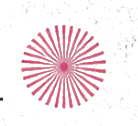
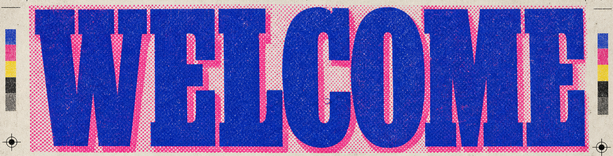
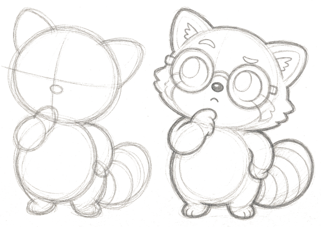
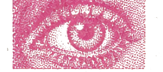
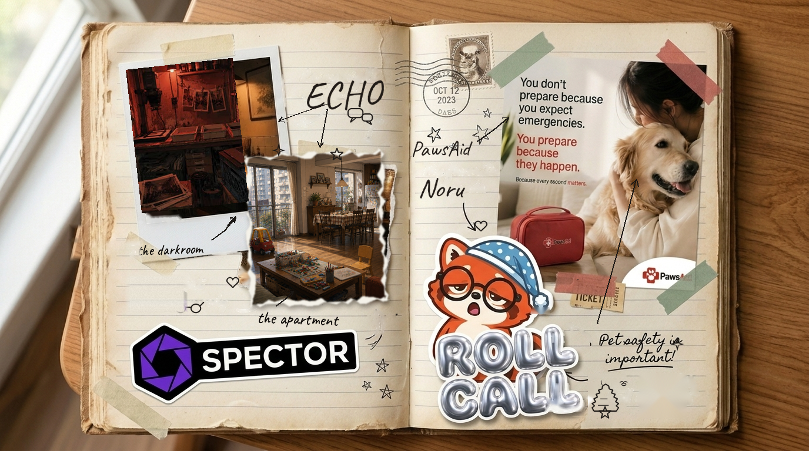
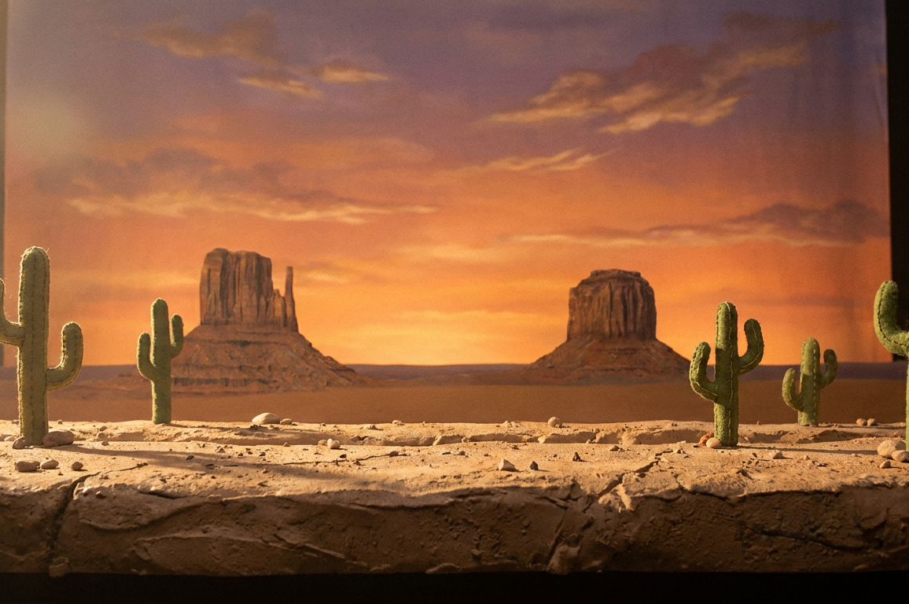
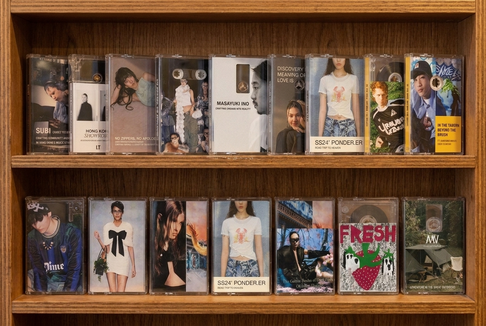
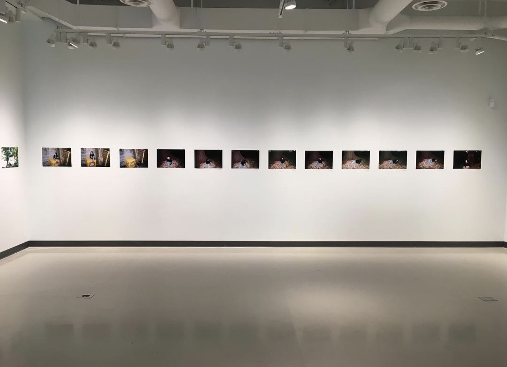
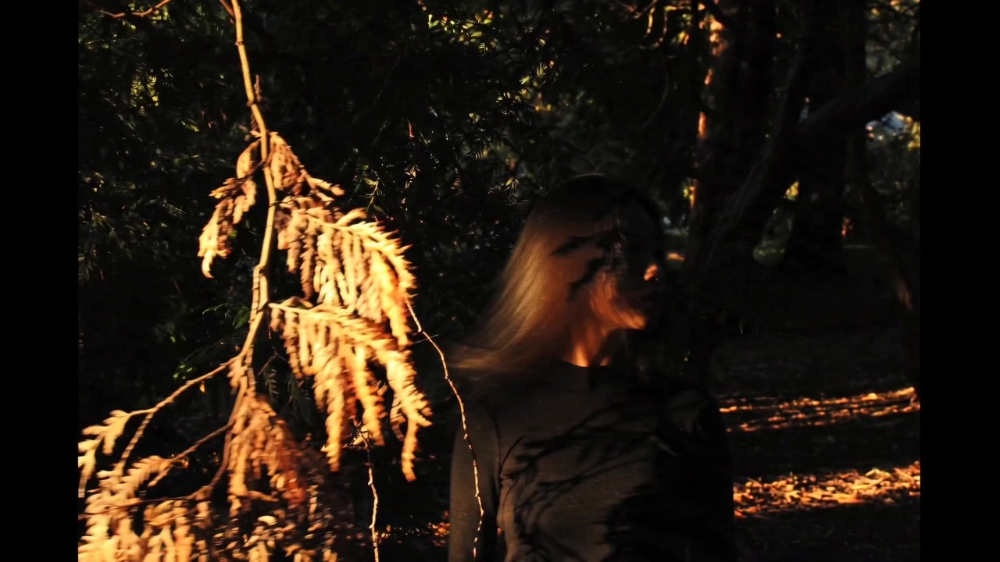
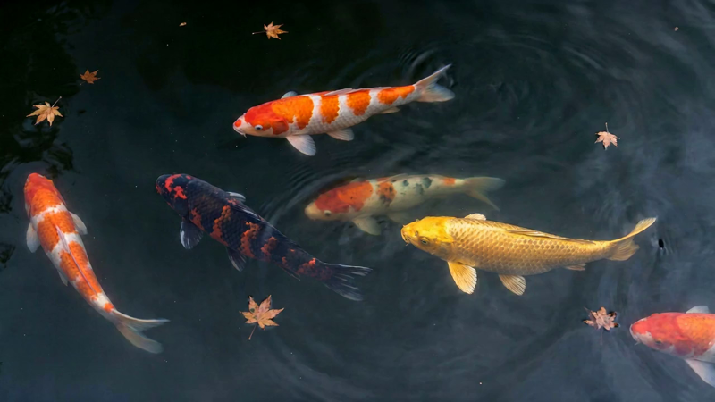

what makes a room yours?
Welcome
Home
Cube in Cube — Olivia Qiu, 2017









What does it mean to circulate an image whose origin was the very crime it documents?

Jeffrey N. Tse is a Systems Architect, Art Director, and Editorial Strategist based in Hong Kong. He builds the structure underneath a thing and the way it looks on the surface — identity systems, fashion and editorial direction, and narrative work — and treats the seam between the two as the whole job.
